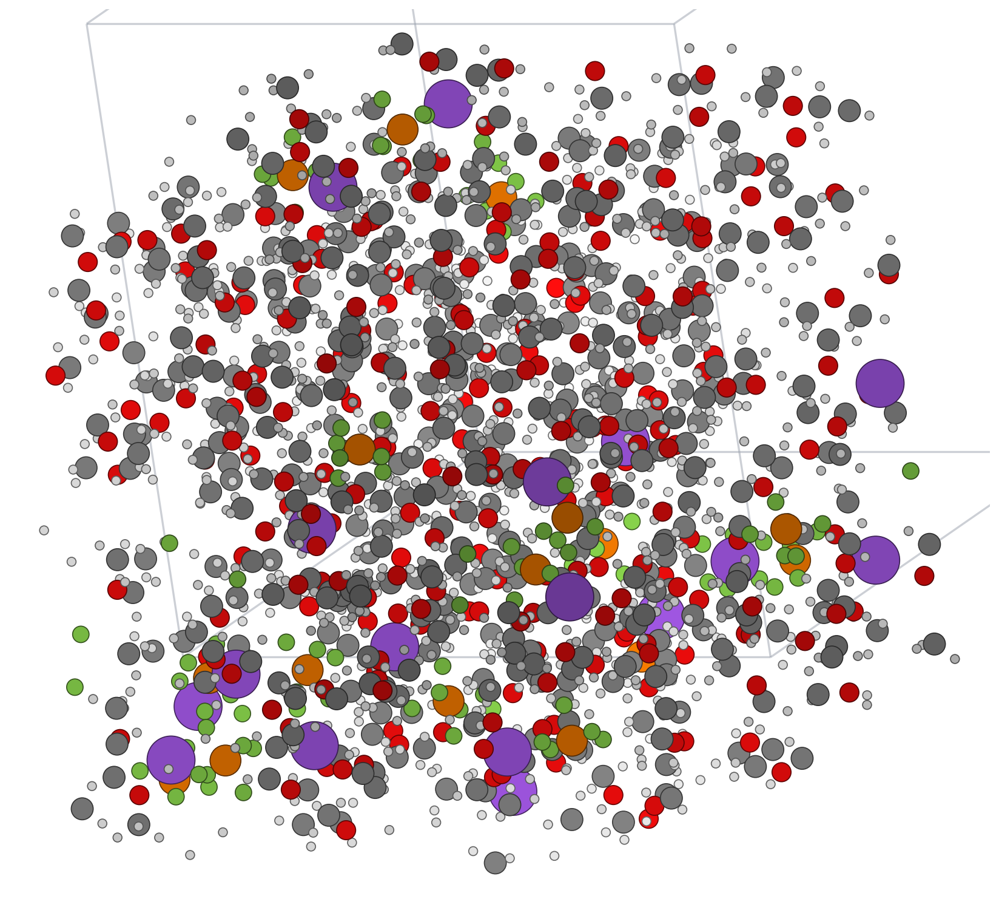

1
Run Teacher trajectories, sample configurations, and train a student model
Teacher MLIP
0
100 ps
energy

collected
snapshots
Rattle
Relabel
with Teacher
Training set
E · F · Stress
Trained per‑system student potential
run MD
50%
50%
2
Run long production simulations with Student
SIMULATION SPEED
Teacher
0.23 ns/day
Student
9.5 ns/day
TRAJECTORY LENGTH
Teacher
100 ps
(used for training)
Student
4 replicas × 20 ns
3
Compute transport properties
experiment
not converged
converged
0
1 ns
20 ns
Running Diffusivity Estimate
simulation time
1 ns
noisy, off‑experiment
predicted
experiment
20 ns
close to experiment
predicted
experiment